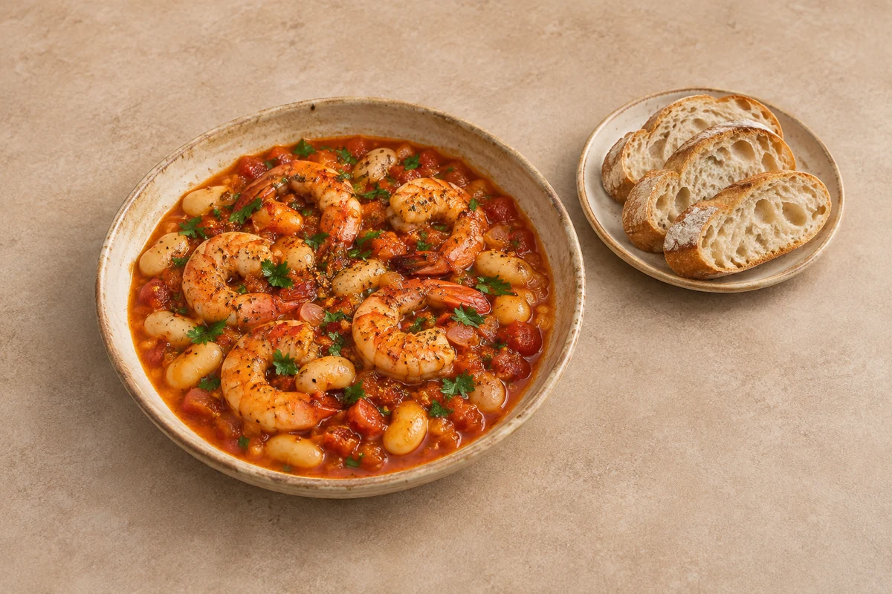

Comfort
Spanish garlic prawns & butter beans
Juicy garlic prawns and butter beans in a smoky tomato sauce, with crusty bread for the pan juices.
Estimated total: About 30 min totalSide included in the recipe.
person
Ingredient quantities update automatically

Ingredients
Prawn and bean skillet
To serve — included
Method
Prepare the prawns
Pat the raw peeled king prawns dry and remove any remaining intestinal vein. Tails can stay on for presentation or be removed for easier eating.Soften the aromatics
Heat the olive oil in a wide, deep frying pan over medium heat. Cook the shallot for 4–5 minutes until softened. Add the garlic and cook for 1 minute without letting it burn.Build the sauce
Stir in the smoked paprika, chilli flakes and tomato purée for 30 seconds. Add the chopped tomatoes, vegetable stock, drained butter beans, salt and black pepper. Simmer gently for 8–10 minutes until the sauce thickens.Add the raw prawns
Nestle the raw king prawns into the sauce. Simmer gently for about 3–5 minutes, turning them once, until opaque and cooked through. Avoid continuing to cook once the prawns are ready.Finish and serve
Stir in the lemon juice and fresh parsley. Serve immediately with the crusty bread. Divide both the skillet and bread between the selected servings.
Tips & leftovers
Storage & leftovers
Cool promptly, refrigerate covered within 2 hours and eat within 48 hours, or sooner if the prawn packet gives a shorter limit. Bread is best stored separately.
Freezing
Best made fresh: freezing the finished dish can make the prawns tough. Freeze the tomato-and-bean sauce before adding raw prawns, then defrost in the fridge and finish with fresh or safely defrosted raw prawns.
Reheating
If reheating leftovers, do so only once until steaming hot throughout. Stir gently and stop once hot to avoid toughening the prawns.
Substitutions
Use another tin of butter beans instead of prawns for a vegetarian version. Use ready-cooked prawns only as a substitution: add near the end just to heat through, and do not reheat that finished version again.
Keeping leftovers safe
Cool cooked leftovers in small portions and refrigerate within 2 hours. Keep the fridge at 0–5°C and the freezer around −18°C. Freeze suitable leftovers promptly. Defrost fully in the fridge and use within 24 hours. Reheat only once, until steaming hot all the way through. Follow any shorter use-by or opened-pack instructions; using older cooked ingredients does not restart their storage time.
Food-safety guidance: Food Standards Agency: chilling and freezing · reheating leftovers.